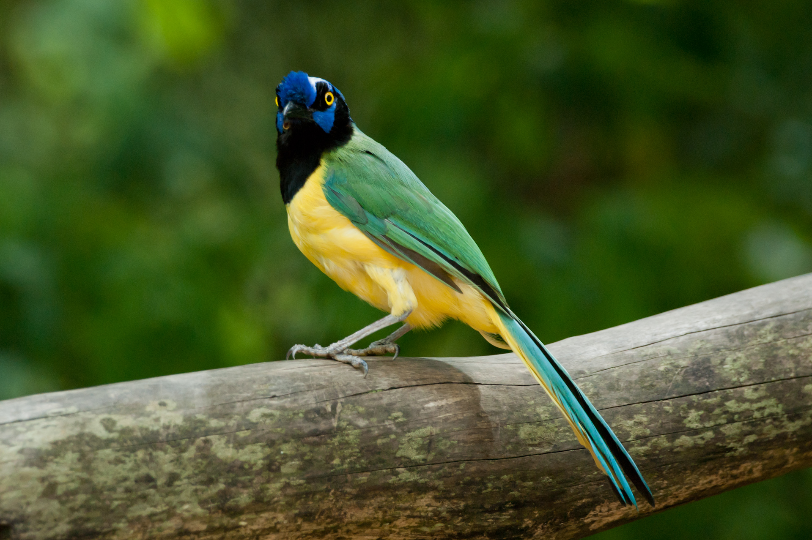

Bienvenidos a la documentación de la plataforma web Cyanocorax¶
Cyanocorax es una plataforma web de código abierto para el manejo de materiales de audio usados en investigaciones lingüísticas, desarrollada por el grupo de Lingüística de Corpus del Instituto Caro y Cuervo.

Cyanocorax Yncas. Imágen tomada de Wikipedia
La paltaforma:¶
Cyanocorax esta basado en Django, un entorno de desarrollo web escrito en Python.
Utiliza la base de datos estructurada MySQL para tareas administrativas, la base de datos no estructurada Mongo para el manejo de metadatos y la base de datos en memoria Redis para el manejo de tareas asíncronas.
La manipulación de archivos de audio se realiza principalmente con ffmpeg, una poderosa colección de herramientas libres para manipulación de audio y video.